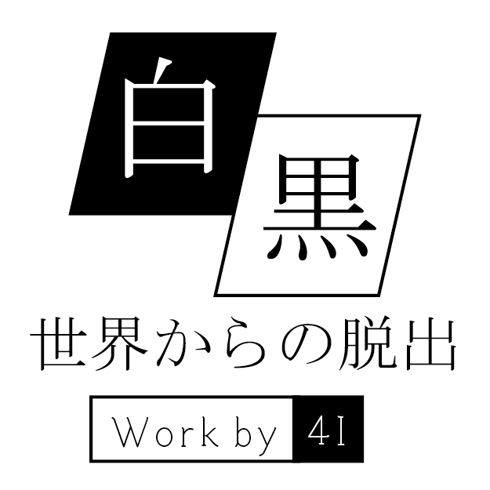

4I 学科展

Introduction
ここは隕石によって色彩管理マシンが破壊され、色のデータが失われてしまった世界。 マシンを修復するためには、研究者の一員であるあなたの協力が必要です。 様々な修復作業をこなし、色のある世界を取り戻しましょう。
Contents
Access

Attention
- 参加には整理券が必要です。
- 整理券は4Iの会場に来ていただいた際にお渡しします。
- 整理券は時間帯指定です。
- 参加できる時間帯・組数には限りがございます。
- 指定時刻の5分前には会場にお越しいただくようご協力をお願いいたします。